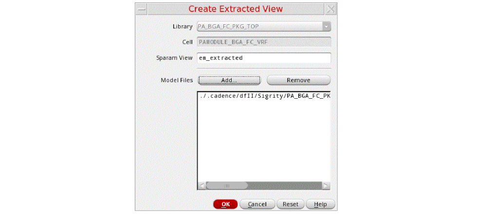
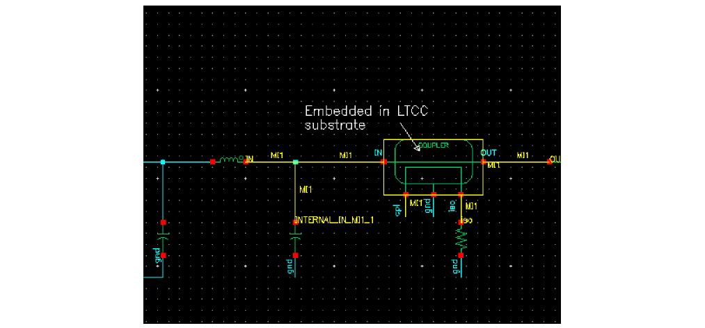

Creating an Extracted View
To create an extracted view of a package schematic and backannotate parasitic models to the golden schematic:
-
Choose Connectivity – Create Extracted View in SiP Layout Option to create an extracted view from selected model files.
The Create Extracted View form opens.
 - Add the model files in the Model Files field and click OK. An extracted cellview contains an n-port instance where the n-port instance refers to an S-parameter file. This S-parameter file is stored inside the extracted cellview folder. This ensures that extracted view and S-parameter file are always synchronized.
-
Choose Connectivity – Annotate from Extracted View to annotate the parasitic models from the extracted view on the master schematic. The Annotate From Extracted View form opens, with models highlighted in the master schematic as shown below.

For IC schematics, you can also use Quantus QRC-based Smart Views to create extracted views after EM simulation.
Related Topics
Annotate From Extracted View Form
Return to top